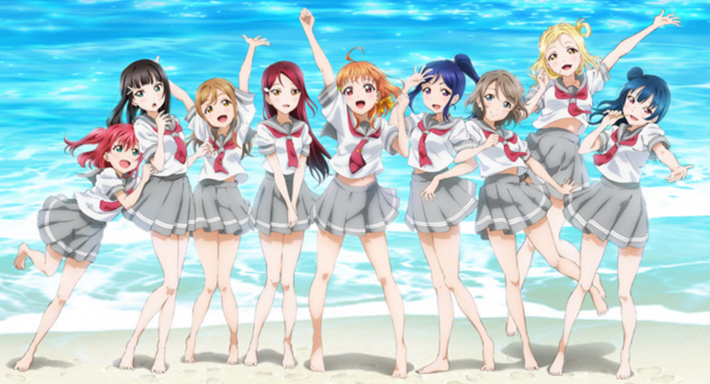
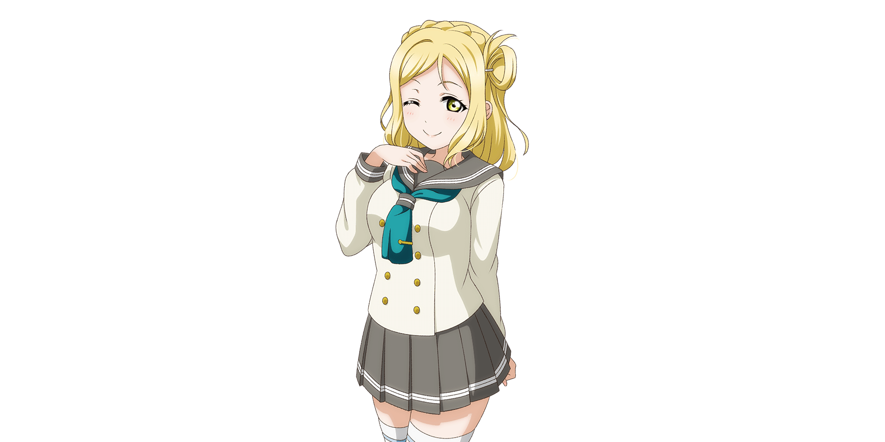

Aqours (pronunciado como "aqua") es un grupo de ídolos escolares que originalmente fue formado y dirigido por Kanan Matsuura dos años antes de desmoronarse y finalmente fue sucedido por Chika Takami en Love Live! ¡¡Sunshine!!. Eran el grupo de ídols escolares de la escuela secundaria de niñas Uranohoshi. El grupo original estaba formado por tres miembros (tercer año). El grupo reformado constaba de nueve miembros junto con todos los miembros originales. Al comienzo de la película, el grupo continúa con seis de los miembros en Seishin High School y se ve que los nuevos miembros lo reforman al final de la película.

Ruby Kurosawa (CV.Furihata Ai) - (Diseñadora de vestuario)
Mari Ohara (CV.Suzuki Aina) - (Fundadora; Original)

Anime
¡Love Live! ¡¡Sunshine!! (ラ ブ ラ イ ブ！ サ ン シ ャ イ ン !! Rabu Raibu! Sanshain !!) es un proyecto multimedia japonés co-desarrollado por Dengeki G's Magazine de ASCII Media Works, el sello musical Lantis y el estudio de anime Sunrise.
Se anunció por primera vez en el sitio web de Dengeki G's Magazine el 26 de febrero de 2015, con imágenes teaser e introducciones de personajes en los siguientes números. El proyecto comenzó oficialmente el 30 de abril de 2015 con el lanzamiento de los nombres de los personajes y la alineación de las actrices de voz.
Temporada 1
La primera temporada comenzó a transmitirse en Japón el 2 de julio y concluyó el 24 de septiembre de 2016.
En la primer temporada hay 13 capitulos.
El tema de apertura es:
Aozora Jumping Heart (青空Jumping Heart) by Aqours
El tema de cierre es:
Yume Kataru yori Yume Utaou (ユメ語るよりユメ歌おう) by Aqours
Temporada 2
La segunda temporada comenzó a transmitirse el 7 de octubre y concluyó el 30 de diciembre de 2017.
En la segunda temporada hay 13 capitulos.
El tema de apertura es:
Mirai no Bokura wa Shitteru yo (未来の僕らは知ってるよ) by Aqours
El tema de cierre es:
Yuuki wa doko ni? Kimi no Mune ni! (勇気はどこに?君の胸に!) by Aqours
Pelicula "Love Live! Sunshine!! The School Idol Movie Over The Rainbow"
La película se estrenó el 4 de enero de 2019. El disco Blu-ray se lanzó el 26 de julio de 2019.
Trama
Tras el cierre de la escuela secundaria de niñas Uranohoshi, los miembros de Aqours prometen continuar con solo seis de ellas. En busca de un nuevo lugar para practicar, visitaron su nueva escuela en los suburbios de Numazu, solo para verla en un estado deplorable. Cuando se reúnen en un café cercano para discutir su situación, notan que You esta hablando con alguien afuera. Las chicas siguen a la You en secreto hasta que Yoshiko la descubre. You presenta a la extraña, que resulta ser su primoa hermano Tsuki.
Tsuki, un estudiante de la nueva escuela, explica que los transferidos fueron colocados en la llamada "escuela secundaria" mientras tanto. En la escuela principal, a los estudiantes les preocupaba que la repentina afluencia hiciera que sus clubes competitivos se ralentizaran y el prestigio de la escuela se perdiera. Para ayudar a disipar los temores de los estudiantes, Aqours realiza un espectáculo en vivo, pero comete un error básico que los hace pensar en el futuro del grupo. Esa noche, Chika y Riko acuerdan trabajar duro para un show en vivo que llegará a aquellos que los malinterpreten.
PV sobre la pelicula: